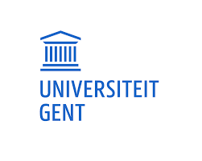

OVER ONS
OPLEIDING
Bij Alphabet Soup Translations zijn we gepassioneerd door taal en streven we ernaar om uw boodschap helder en effectief over te brengen in verschillende talen. Met een achtergrond in Toegepaste Taalkunde aan de Universiteit Gent hebben we ons gespecialiseerd in tekstrevisie, proeflezen en vertaling in het Nederlands, Frans, Engels en Spaans.
TEAMLEDEN
Ons team bestaat uit drie enthousiaste twintigers: Laura, Tine en Elise. Tine heeft als moedertaal Nederlands en vertaalt naar of van het Nederlands, Engels en Spaans. Daarnaast reviseert en proefleest ze teksten en houdt ze zich bezig met de administratieve kant van het bedrijf. Elise heeft Nederlands als moedertaal en vertaalt naar en vanuit het Nederlands, Frans en Spaans. Ze voert revisies uit en proefleest naast haar financiële verantwoordelijkheden binnen het bedrijf. Naast het verwerven van klanten, reviseren en proeflezen van teksten, houdt Laura zich ook bezig met vertalingen. Met het Nederlands als moedertaal vertaalt ze vlot naar en van het Nederlands, Engels en Spaans.

KLANTEN
Of u nu een bedrijf, organisatie of individu bent, bij Alphabet Soup Translations kunt u rekenen op professionele taaldiensten die aansluiten bij uw behoeften en doelstellingen. Neem vandaag nog contact met ons op en ontdek hoe we u kunnen helpen met uw taaluitdagingen!

Neem vandaag nog contact met ons op.